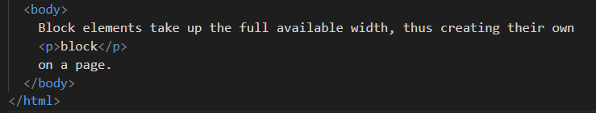
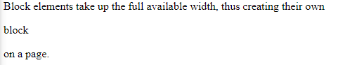
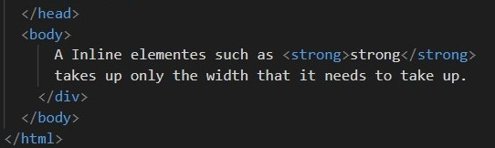
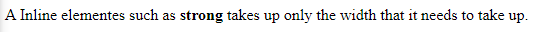
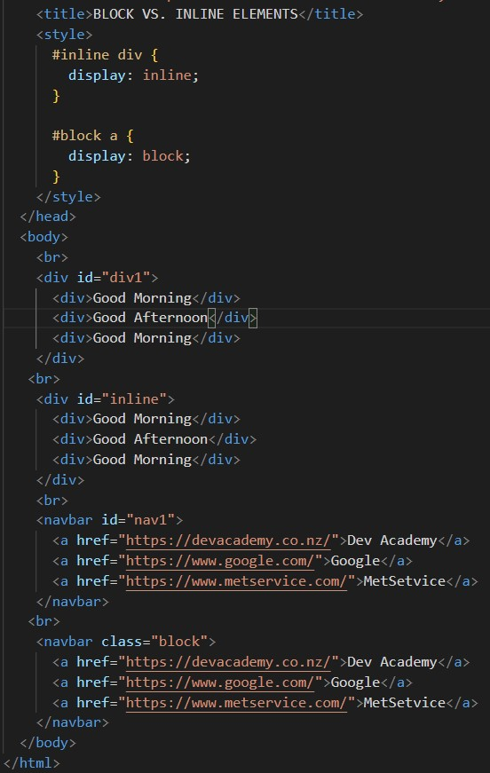
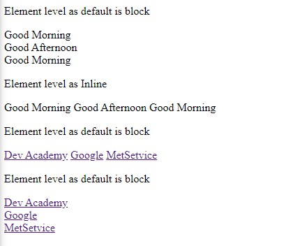

BLOCK VS. INLINE ELEMENTS
There are essentially two kinds of HTML elements: Block elements and inline elements. The best way to think about them is by how much page width they take up.
Block elements, e.g. <h1>, <div>, <p>, <li>
- Take up the full available width, thus creating their own block on a page.
- Each element fits into the box model and has its own spacing.
- Have a line-break before and after.
HTML Code:
Result:
Inline elements, e.g. <span>, <a>, <strong>, <em>
HTML Code
Result:
Changing element levels
You can change the visual presentation of an element using the CSS display property. For example, by changing the value of display from "inline" to "block", you can tell the browser to render the inline element in a block box rather than an inline box, and vice versa. Let's see a example In the figure below.
HTML Code
Result:
On the figure example we have an outer div, called div1, which contains some divs, and then have another outer div, called "inline", which also has some divs. Now, in div1, notice there's no CSS styling up here for div1. So these divs display as they would by default. And by default, divs display on their inline.
We have a separate line for each of these divs being displayed. Okay, so those are the first three divs, they're displayed as block elements by default.
Okay, now let's have a look at the second div. For this div, I've also got nested divs. For "inline div", I've said this publicly, this rule here, it says, In "inline div", any divs inside it will be inline as opposed to block. So when we have "inline div", any divs inside it will be displayed as inline elements. So that's the effect that you see.
Moving on, I have a navbar which contains some hyperlinks, and I have another navbar which also displays hyperlinks, but let's see how styling kicks in. So, this first navbar "nav1", I haven't defined any CSS for nav1. So these hyperlinks get displayed in their normal format, which is as an inline element.
The second "block navbar", the same hyperlinks, but this time, I've said for "block navbar", for that section, any anchors, any hyperlinks inside "block navbar" will be displayed as block. So when you set displayed block, then each hyperlink goes on its own line like so.